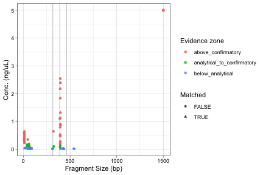
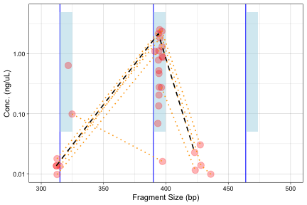

library(PCRprofilR)
This tutorial shows how to turn a capillary electrophoresis result into an auditable table of PCR sample calls.
It is written for a laboratory user who may not write R code every day. The important ideas are biological and experimental:
The example uses the package data set mosquito, which contains fragment profiles from a PCR assay used to identify members of the Anopheles gambiae species complex (Scott et al. 1993).
At the end of the workflow we want three connected tables:
These tables can be inspected in R, exported to files, used in a report, or passed later to a batch workflow or review interface.
The data set is already included in the package, so we can load it directly. In a real project, this table would usually come from a CSV or TSV file exported by the electrophoresis instrument software.
data(mosquito)
head(mosquito[, c("WellID", "SampleID", "Type", "Size", "Conc")], 8)
#> WellID SampleID Type Size Conc
#> 1 A01 SN20-00548 LM NA 5.00000000
#> 2 A01 SN20-00548 UM 1500.000000 5.00000000
#> 3 A01 SN20-00548 ? NA NA
#> 4 B01 SN20-02376 LM NA 5.00000000
#> 5 B01 SN20-02376 9.352784 0.57260202
#> 6 B01 SN20-02376 41.292985 0.05922034
#> 7 B01 SN20-02376 46.185707 0.05089400
#> 8 B01 SN20-02376 57.443583 0.03860815
The important columns are:
WellID: the well on the PCR plate;SampleID: the sample name;Size: the observed fragment size in base pairs;Conc: the observed fragment concentration;Type: an instrument-specific row type. Some rows are not biological peaks.One sample can have several rows because one sample can produce several observed fragments.
The mosquito data also contain ladder and calibration rows. Those rows are useful to the instrument, but they are not biological peak evidence. Some of them have missing size or concentration values, so they must be removed before we create the canonical peak table.
usable_peak_rows <- with(
mosquito,
!is.na(Size) &
is.finite(Size) &
Size > 0 &
!is.na(Conc) &
is.finite(Conc) &
Conc >= 0 &
!is.na(WellID) &
nzchar(as.character(WellID)) &
!is.na(SampleID) &
nzchar(as.character(SampleID))
)
table(usable_peak_rows)
#> usable_peak_rows
#> FALSE TRUE
#> 55 223
Rows marked TRUE are usable peak rows for this tutorial. Rows marked FALSE are not sent to the strict peak interpreter.
PCRprofilR uses standard internal column names so that the same interpretation functions can work with different instruments. Here we add a few bookkeeping columns and then keep only usable peak rows.
peaks_input <- transform(
mosquito,
RunID = "run-1",
PlateID = "plate-1",
PeakID = paste0("peak-", seq_len(nrow(mosquito))),
RawFile = "mosquito.csv",
Instrument = "labchip"
)
peaks_input <- peaks_input[usable_peak_rows, ]
peaks <- as_pcr_peaks(peaks_input)
head(peaks)
#> # A tibble: 6 x 9
#> run_id plate_id well_id sample_id peak_id size_bp concentration raw_file
#> <chr> <chr> <chr> <chr> <chr> <dbl> <dbl> <chr>
#> 1 run-1 plate-1 A01 SN20-00548 peak-2 1500 5 mosquito.csv
#> 2 run-1 plate-1 B01 SN20-02376 peak-5 9.35 0.573 mosquito.csv
#> 3 run-1 plate-1 B01 SN20-02376 peak-6 41.3 0.0592 mosquito.csv
#> 4 run-1 plate-1 B01 SN20-02376 peak-7 46.2 0.0509 mosquito.csv
#> 5 run-1 plate-1 B01 SN20-02376 peak-8 57.4 0.0386 mosquito.csv
#> 6 run-1 plate-1 B01 SN20-02376 peak-9 62.7 0.0243 mosquito.csv
#> # i 1 more variable: instrument <chr>
If you see an error saying that size_bp or concentration must be numeric and non-missing, it usually means that non-peak rows, ladder rows, or blank instrument rows were still present in the input.
The assay specification tells PCRprofilR what fragments are expected.
For this example, three diagnostic targets are considered:
For each target we give:
assay <- as_pcr_assay(data.frame(
assay_id = c("species-assay", "species-assay", "species-assay"),
target_id = c("arabiensis", "gambiae", "melas"),
expected_size_bp = c(315, 390, 464),
lower_size_bp = c(315, 390, 464),
upper_size_bp = c(325, 400, 474),
min_concentration = c(0.05, 0.05, 0.05),
confirm_concentration = c(0.2, 0.2, 0.2),
biological_label = c("arabiensis", "gambiae", "melas"),
rule_group = c("species", "species", "species"),
target_role = c("optional", "optional", "optional"),
stringsAsFactors = FALSE
))
assay
#> # A tibble: 3 x 10
#> assay_id target_id expected_size_bp lower_size_bp upper_size_bp
#> <chr> <chr> <dbl> <dbl> <dbl>
#> 1 species-assay arabiensis 315 315 325
#> 2 species-assay gambiae 390 390 400
#> 3 species-assay melas 464 464 474
#> # i 5 more variables: min_concentration <dbl>, confirm_concentration <dbl>,
#> # biological_label <chr>, rule_group <chr>, target_role <chr>
The target_role column is useful for more complex assays. In this simple species-identification example each target is optional: a sample can match one of them, none of them, or more than one if the profile needs review.
The next step creates peak-level evidence. Each observed fragment is compared with each expected target.
peak_calls <- detect_pcr_peaks(peaks, assay)
head(
peak_calls[peak_calls$matched, c(
"sample_id",
"target_id",
"size_bp",
"expected_size_bp",
"size_delta_bp",
"concentration",
"evidence_zone",
"matched"
)]
)
#> # A tibble: 6 x 8
#> sample_id target_id size_bp expected_size_bp size_delta_bp concentration
#> <chr> <chr> <dbl> <dbl> <dbl> <dbl>
#> 1 SN20-02376 gambiae 397. 390 7.00 0.902
#> 2 SN20-02377 arabiensis 322. 315 6.66 0.642
#> 3 SN20-02378 gambiae 394. 390 4.40 0.206
#> 4 SN20-02381 gambiae 391. 390 1.09 1.10
#> 5 SN20-02384 gambiae 397. 390 7.46 0.873
#> 6 SN20-02385 arabiensis 325. 315 9.74 0.0991
#> # i 2 more variables: evidence_zone <chr>, matched <lgl>
The key columns are:
size_delta_bp: how far the observed fragment is from the expected size;evidence_zone: whether the concentration is below the analytical threshold, between analytical and confirmatory thresholds, or above the confirmatory threshold;matched: whether the observed peak is both inside the size window and above the analytical concentration threshold.This table is the audit trail. The final sample calls are derived from it.
Now we summarize the peak evidence sample by sample.
sample_calls <- classify_pcr_samples(peak_calls)
head(sample_calls[, c(
"well_id",
"sample_id",
"call",
"call_state",
"matched_targets",
"rule_status",
"review_required"
)])
#> # A tibble: 6 x 7
#> well_id sample_id call call_state matched_targets rule_status review_required
#> <chr> <chr> <chr> <chr> <chr> <chr> <lgl>
#> 1 A01 SN20-005~ nega~ negative "" compatible FALSE
#> 2 A02 SN20-012~ nega~ negative "" compatible FALSE
#> 3 A03 SN20-023~ posi~ positive "gambiae" compatible FALSE
#> 4 B01 SN20-023~ posi~ positive "gambiae" compatible FALSE
#> 5 B02 SN20-023~ nega~ negative "" compatible FALSE
#> 6 B03 SN20-023~ nega~ negative "" compatible FALSE
call is the simple positive/negative field. call_state is the field to read when you want the real interpretation status.
table(sample_calls$call_state)
#>
#> negative positive weak_positive
#> 29 16 3
The main call states are:
positive: clear evidence above the confirmatory threshold;negative: no target evidence;weak_positive: target evidence above the analytical threshold but below the confirmatory threshold;indeterminate_review: a trace is inside the expected size window but below the analytical threshold;ambiguous_review: the pattern conflicts with the assay rules;hybrid_candidate or mixed_profile_candidate: several biological labels are detected and the profile should be reviewed.The important habit is to treat review states as part of the result, not as errors to be discarded.
QC is not separate from interpretation. A call is easier to trust when the sample, controls, and run metadata are also consistent.
qc <- qc_pcr_run(peaks, sample_calls)
head(qc[, c(
"well_id",
"sample_id",
"control_role",
"qc_status",
"contamination_candidate",
"duplicate_sample_id_in_run"
)])
#> # A tibble: 6 x 6
#> well_id sample_id control_role qc_status contamination_candidate
#> <chr> <chr> <chr> <chr> <lgl>
#> 1 A01 SN20-00548 sample pass FALSE
#> 2 A02 SN20-01225 sample pass FALSE
#> 3 A03 SN20-02323 sample pass FALSE
#> 4 B01 SN20-02376 sample pass FALSE
#> 5 B02 SN20-02386 sample pass FALSE
#> 6 B03 SN20-02397 sample pass FALSE
#> # i 1 more variable: duplicate_sample_id_in_run <lgl>
table(qc$qc_status)
#>
#> pass
#> 48
qc_status is deliberately simple:
pass: no machine-readable QC problem was detected;review: the result should be inspected;fail: the result should not be accepted without resolving the QC problem.More detailed columns explain why a sample was flagged.
The modern plotting helper consumes the evidence and call objects that were already computed. It does not recalculate positivity rules inside the plot.
plot_pcr_evidence(peak_calls, sample_calls = sample_calls, qc = qc)

This plot is useful for review because the points are colored by the evidence zone already assigned by the deterministic interpreter.
If the same biological sample is tested several times, the replicate summary can show whether the repeated calls agree. The example data do not contain a full replicate design, but the function works on the same sample-call and QC tables.
replicate_summary <- summarize_pcr_replicates(sample_calls, qc = qc)
head(replicate_summary)
#> # A tibble: 6 x 11
#> sample_id n_replicates positive_replicates negative_replicates
#> <chr> <int> <int> <int>
#> 1 CTR 1 1 0
#> 2 SN20-00548 1 0 1
#> 3 SN20-00584 1 0 1
#> 4 SN20-00871 1 0 1
#> 5 SN20-00882 1 0 1
#> 6 SN20-01069 1 0 1
#> # i 7 more variables: review_replicates <int>, unique_call_states <int>,
#> # replicate_concordance <chr>, consensus_call_state <chr>,
#> # consensus_call <chr>, any_qc_fail <lgl>, any_contamination_candidate <lgl>
For real replicate designs, choose replicate_keys so that repeated wells, plates, or runs are grouped under the same biological sample identifier.
For routine work, the outputs should be written to files rather than copied by hand from the console. The export helper writes the evidence table, the sample call table, the QC table, and a simple summary report.
The code below is not run when the vignette is built because it writes files to an output directory.
report_out <- report_pcr_calls(
peak_calls = peak_calls,
sample_calls = sample_calls,
qc = qc,
output_dir = "pcr-results",
format = "csv",
write_summary = TRUE
)
For command-line or container workflows, run_pcr_batch() performs the same kind of deterministic interpretation from input files:
batch_out <- run_pcr_batch(
peaks_path = "peaks.csv",
assay_path = "assay.csv",
output_dir = "pcr-results"
)
The scientific logic is the same. Batch mode is only a different way to run the same core functions.
Sometimes you do not yet know which size tolerance or concentration threshold is reasonable for a new assay or instrument. The legacy exploratory helpers are still useful for that stage.
targets <- c(arabiensis = 315, gambiae = 390, melas = 464)
PCRexplorer(
mosquito,
targets,
tolerance = c(0, 10),
threshold = 0.05,
xlimits = c(300, 500),
logy = TRUE,
join = TRUE,
control = "CTR"
)
#> Warning: Removed 193 rows containing missing values or values outside the scale range
#> (`geom_point()`).
#> Warning: Removed 193 rows containing missing values or values outside the scale range
#> (`geom_line()`).
#> Warning: Removed 7 rows containing missing values or values outside the scale range
#> (`geom_line()`).

PCRexplorer() helps you inspect the raw run. Once the assay settings are chosen, use the canonical workflow above for reproducible evidence, calls, QC, plots, and exports.
This is the same workflow without the teaching text.
library(PCRprofilR)
data(mosquito)
peaks_input <- transform(
mosquito,
RunID = "run-1",
PlateID = "plate-1",
PeakID = paste0("peak-", seq_len(nrow(mosquito))),
RawFile = "mosquito.csv",
Instrument = "labchip"
)
usable_peak_rows <- with(
peaks_input,
!is.na(Size) &
is.finite(Size) &
Size > 0 &
!is.na(Conc) &
is.finite(Conc) &
Conc >= 0 &
!is.na(WellID) &
nzchar(as.character(WellID)) &
!is.na(SampleID) &
nzchar(as.character(SampleID))
)
peaks <- as_pcr_peaks(peaks_input[usable_peak_rows, ])
assay <- as_pcr_assay(data.frame(
assay_id = c("species-assay", "species-assay", "species-assay"),
target_id = c("arabiensis", "gambiae", "melas"),
expected_size_bp = c(315, 390, 464),
lower_size_bp = c(315, 390, 464),
upper_size_bp = c(325, 400, 474),
min_concentration = c(0.05, 0.05, 0.05),
confirm_concentration = c(0.2, 0.2, 0.2),
biological_label = c("arabiensis", "gambiae", "melas"),
rule_group = c("species", "species", "species"),
target_role = c("optional", "optional", "optional"),
stringsAsFactors = FALSE
))
peak_calls <- detect_pcr_peaks(peaks, assay)
sample_calls <- classify_pcr_samples(peak_calls)
qc <- qc_pcr_run(peaks, sample_calls)
replicate_summary <- summarize_pcr_replicates(sample_calls, qc = qc)
Scott, J. A., Brogdon, W. G., and Collins, F. H. (1993). Identification of single specimens of the Anopheles gambiae complex by the Polymerase Chain Reaction. The American Journal of Tropical Medicine and Hygiene, 49(4), 520-529.